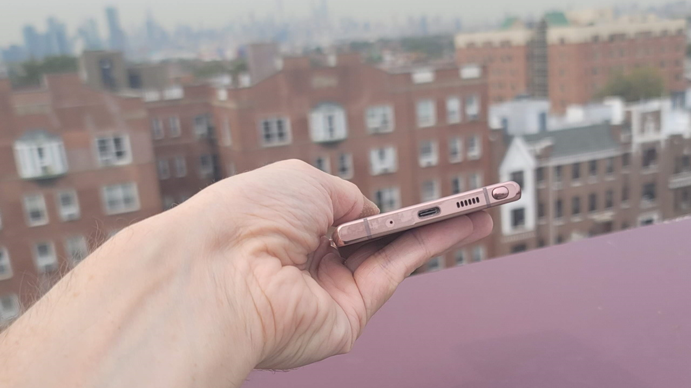
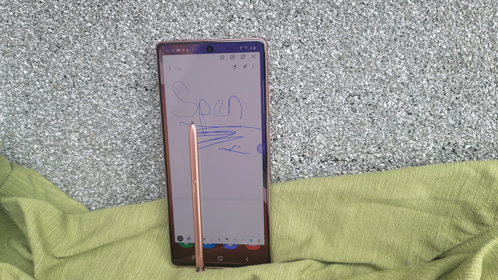
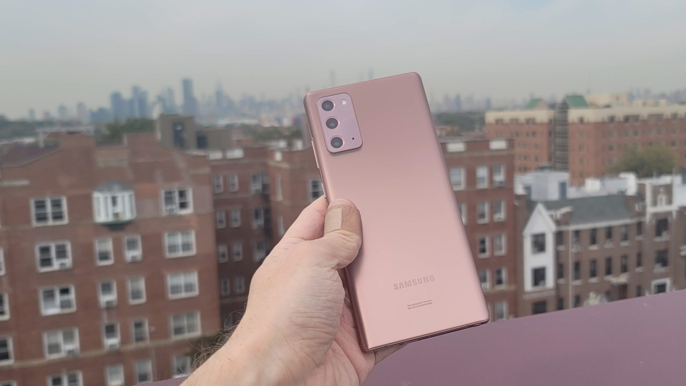

Samsung Galaxy Note 20
"I want the phone with the pen." That's what you hear at my house, full of artists: They want the phone with Samsung's S Pen stylus. If that's all you want, then the Galaxy Note 20 is a fine way to get one. The $999.99 Note 20 isn't as good as the $1,399.99 Galaxy Note 20 Ultra, most notably in terms of camera and display. But it's the phone with the pen that costs less than $1,000, and that will be good enough for some people. That said, I can't help but feel there's not enough here to stand out among Samsung's myriad phone releases this year.
The most controversial part of the Note 20's design is the back, because it's matte plastic. That doesn't bother me, as it's more flexible and durable than a crackable glass panel. But I also understand that it doesn't feel quite as premium, especially for a phone that costs $1,000.
 Great performance, average battery life
The Galaxy Note 20 comes in bronze, gray, or green. At 6.3 by 3.0 by 0.3 inches (HWD) and 6.8 ounces, it's not a small phone and will be too wide for many people to use one-handed. If you're looking for a smaller Samsung phone, you really have to go with the standard Galaxy S20 (also $999), but it doesn't support the S Pen.
The Note 20's rectangular camera bump is much less intense than the Note 20 Ultra's (there's no telephoto and no 108-megapixel camera), but I still recommend you put all $1,000 phones in a case. The different back material doesn't change the phone's waterproof rating, which is still IP68.
The 6.7-inch, 1080p flat screen runs at 60Hz. That's a big step down from the Note 20 Ultra, which can go to 2K or 120Hz (but not both at the same time). It's even lower resolution than the Galaxy Note 9 and Note 8. The display is fine indoors, but I feel like it's somewhat dimmer and more reflective than the Note 20 Ultra outside.
On paper, the previous Galaxy Notes have about a 45ms S Pen response rate, while the Note 20 goes down to 18ms and the Note 20 Ultra hits 9ms. But my Galaxy Note-loving wife and daughter didn't see a noticeable difference in responsiveness between the various phones. Maybe the limit is really Android software, as my wife has said several times that she finds the 120Hz iPad Pro with the second-generation Apple Pencil to be even better than the Note.
There's still nothing like the S Pen on any other phone. If you're drawing or taking notes, no other phone stylus has the same level of pressure sensitivity, tilt awareness, and in-device storage. Recently, I've also really enjoyed using the S Pen's button as a remote camera shutter, a seemingly minor feature that turns out to be very handy.
Fine Performance
The Note 20 has a Qualcomm Snapdragon 865+ processor and benchmarks just like other top-of-the-line phones with the same chipset. It has 8GB of RAM (as compared with the Note 20 Ultra's 12GB) and 128GB of non-expandable storage. One interesting note: My Note 20 has a double-length SIM card holder that has space on it for a second SIM or a microSD card, except that space is filled in so you can't use it.
The software is also the same as in the Note 20 Ultra. That means lots of Samsung customizations to Android 10. The Note 20 supports wireless DeX connectivity to cast a PC-like mode to your TV; Microsoft Your Phone to transfer files and get notifications on your Windows PC; and Note-exclusive features like using the S Pen as a camera trigger or with air gestures to operate the phone's UI from a distance.
Battery life, as with the Note 20 Ultra, is excellent. The Note 20 has a slightly smaller battery, but it also has a lower resolution or lower frame rate screen, so that tends to balance things out. The phone had 27 percent of battery left after our 12-hour video rundown test at 75 percent brightness, showing the strength of Samsung's power management. The phone supports 22W wired and 10W wireless charging, like other recent Samsung phones.
The Galaxy Note 20 has all of the various forms of 5G used in the US right now. I compared it with a Galaxy S20+ on T-Mobile's network and found performance was effectively the same, which is good news, as the Galaxy S20+ has excellent performance. Both phones showed 11-15ms pings and peaked over 500Mbps on T-Mobile's mid-band 2.5GHz 5G network in New York. 4G performance is also similar to the other recent Samsung flagships, with 7-carrier aggregation that can take advantage of all of the US carriers' most advanced 4G network features.
Other basic connectivity and calling features work well, too. The phone has strong dual speakers at the top and bottom. Call quality is good, with support for high-quality HD and EVS calling.
The Note 20 has Bluetooth 5 and Wi-Fi 6. It doesn't have the new "ultra wideband" chip present in the Galaxy Note 20 Ultra, but I haven't found any real use for it.
Cameras
The Note 20 has, effectively, three 12-megapixel cameras on the back. The "telephoto" camera is 64MP, but that's really just used to simulate a 3x telephoto via digital zoom.
The ultra-wide lens appears to be the same as the Note 20 Ultra's, at f/2.2 and 120 degrees. The main camera, on the other hand, is very different, with dual-pixel autofocus rather than the Ultra's dedicated laser autofocus, and 12-megapixel sensors rather than 108. The Ultra's laser sight focuses more easily on very close and complex subjects, like a flower right in front of the lens. The Ultra also has, as you'd expect, far superior zoom, with real 5x optics making for a much sharper zoomed image than the Note 20's digital zoom.
The Note 20's 12-megapixel main lens, on the other hand, is just fine. With an f/1.8 aperture and dual-pixel autofocus, its low-light performance is just about the same as its bigger sibling. In some cases, my main-camera shots on the Note 20 were even better than on the Note 20 Ultra because the Ultra's 108-megapixel camera has very shallow depth of field and needs to be handled a bit differently.
The front-facing camera is the same f/2.2 10MP shooter as on the Note 20 Ultra. After significant experience with the Note 20 Ultra, I can tell you that front-facing camera is terrific: I've been shooting product videos with it, and they come out crystal clear.
Like the other Samsung flagships this year, the Note 20 can record 8K video, which is optically stabilized.
Lost in the Crowd?
I was blown away by the Note 20 Ultra, which clouds my appreciation of the Note 20 somewhat. But if what you really want is a "phone with a pen," for less than $1,000, this is that phone. That said, Samsung currently has about 20 other phones on offer through US carriers alone, and the Note 20 just doesn't stand out. If you're already spending $1,000 on a new phone, the Note 20 Ultra doesn't seem drastically more expensive in comparison, and gets you the highest-end experience you can buy right now. Or you can spend far less on Samsung's recently announced Galaxy S20 Fan Edition, which delivers a reasonably high-end for $699. The Note 20 sits somewhere in the middle, and I'm afraid it's going to get lost there.
Author
P.K
11/11/2021
© 2021 Tech-Week-Tastic Inspired by Samsung, Developed for Samsung